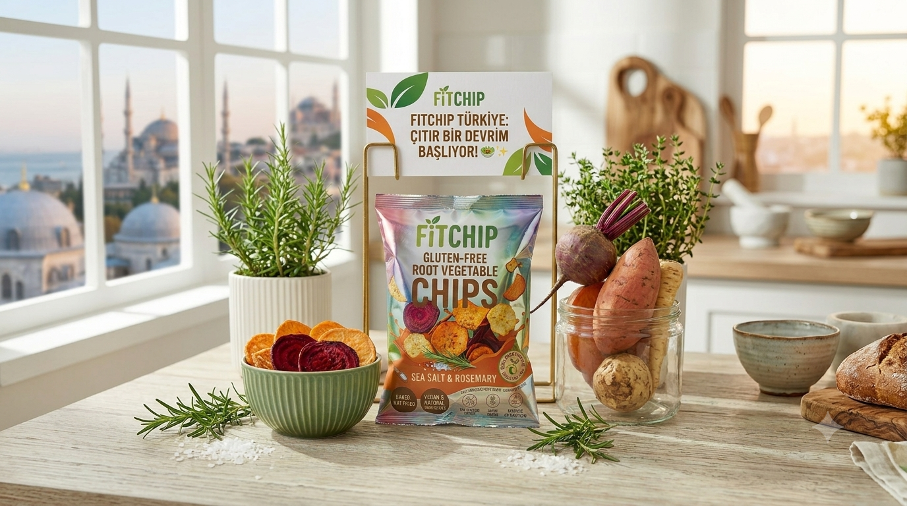

FİTCHİP, lezzetten ödün vermeden sağlıklı beslenmeyi herkes için erişilebilir kılmak amacıyla kurulmuş yenilikçi bir atıştırmalık markasıdır.
Geleneksel yağlı cipslerin getirdiği kalori yükünü ortadan kaldırarak, temiz içerikli ve fırınlanmış gurme lezzetleri tüketicilerimizle buluşturmaktır.
Sağlıklı atıştırmalık sektöründe Türkiye'nin öncü markası olmak ve çıtır lezzetlerimizi dünya pazarına taşımaktır.
Üretim felsefemizin temelinde şeffaflık, %100 doğallık, sürdürülebilir tarım desteği ve insan sağlığına koşulsuz saygı yer almaktadır.